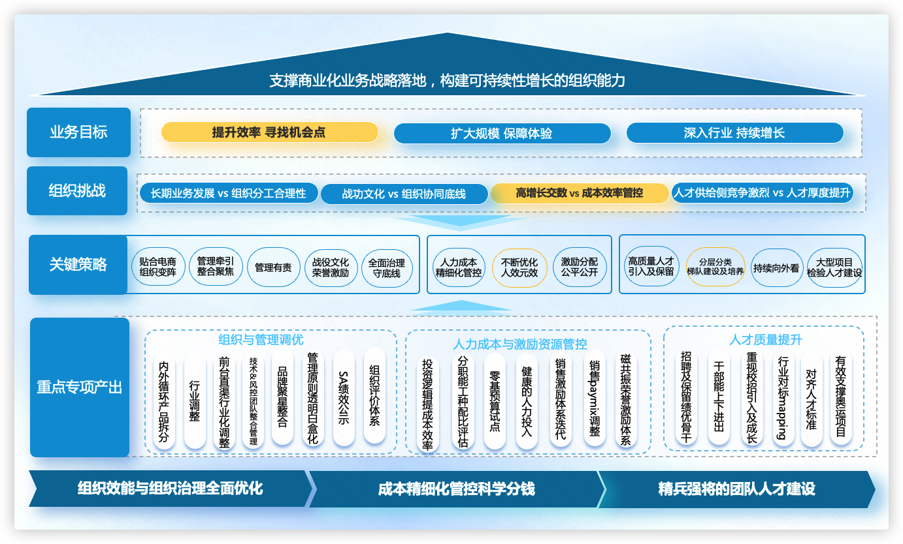
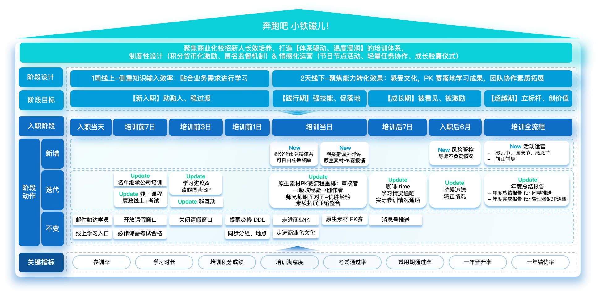
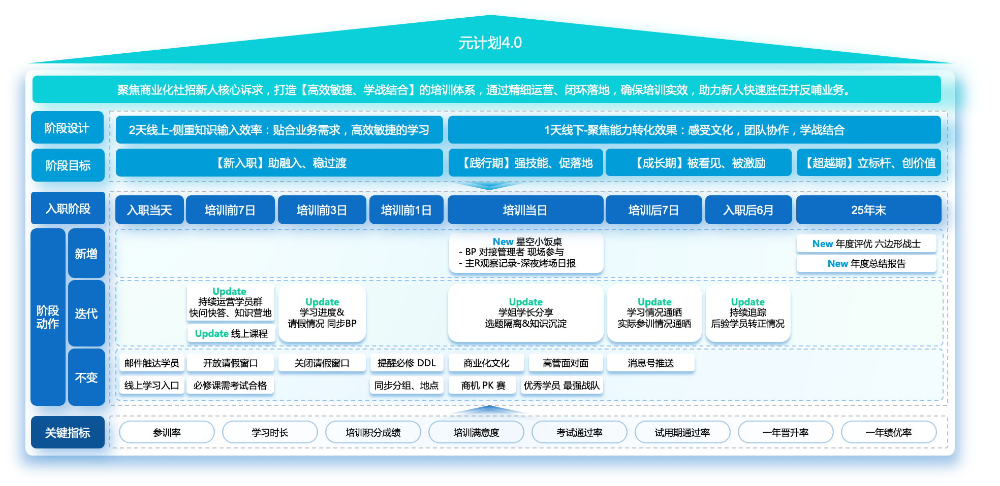
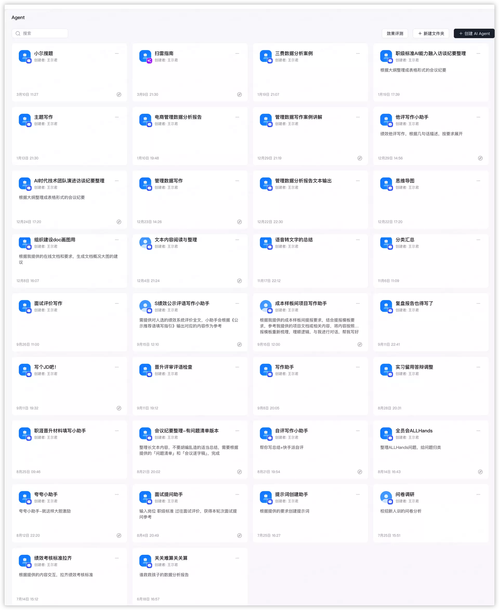

我是winnie，一个拒绝“低效拉磨”的全干工程师。通过“数据探针”穿透治理、通过“逻辑重构”重组阵型、通过“AI 杠杆”实现资产封装。
数据驱动的精益运营，年化节约损耗 1500万+。
存量资源重组，在动态跑动中精准清淤。
高质量场域 + 动力设计，人效提升100%。
自研 30+ Agent，让管理动作零公差复制。

图 1：逐步点亮精细化运营
校招新人全景图
社招新人全景图
图 4：自研 AI 数字化助理 Luigi 矩阵